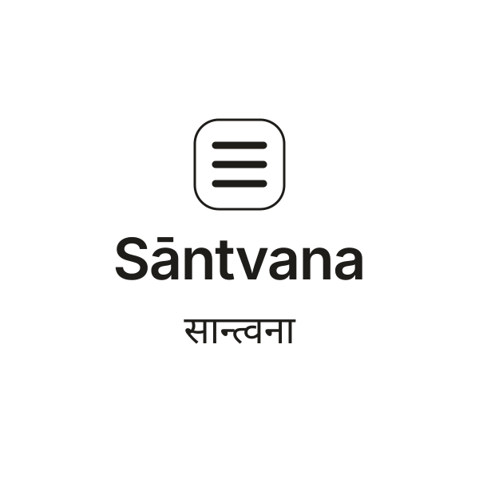
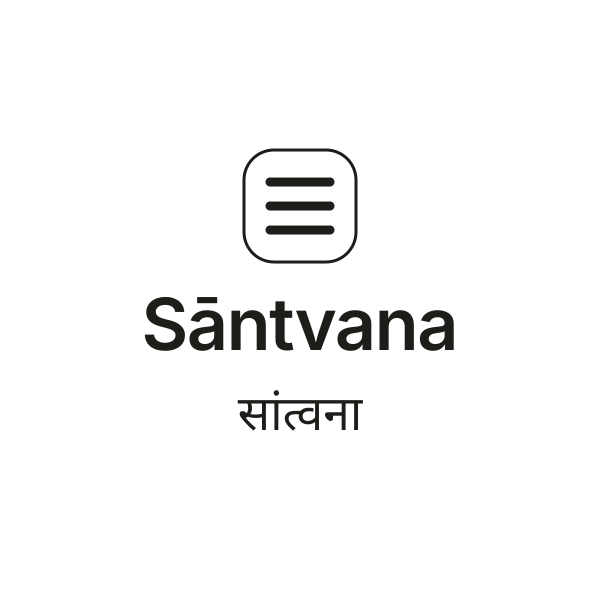

Phase 2 · step 1 · decision record · 30 October 2026
../phase-2/logos/, outlined from Archivo 600 and Noto Sans Devanagari 600. The final-face re-run is in legibility-test-anusvara.md §5; it passes at 20 px on 1×, while the conservative 28 px 1× rule remains parked for founder decision.One wordmark, two Devanagari spellings.
The Latin wordmark and the tread mark are identical in both concepts. Only the Devanagari changes: सान्त्वना keeps the conjunct न्त्व; सांत्वना uses the anusvara dot. Pick the one that still reads at 20 px, not the one that looks best at 120 px.
Selected: B — सांत्वना (anusvara), 30 October 2026
Concept A — Conjunct
सान्त्वना · न्त्व joined
What it is: the n and t are joined in the conjunct न्त्व, with the v following. This is the more literal Sanskrit form and the one in the name you supplied. Risk: the conjunct is the first shape to collapse when the mark shrinks.
Concept B — Anusvara Selected
सांत्वना · nasal dot
What it is: the nasal is written as the anusvara dot above the line, and the त and व stay separate. Dictionaries use both spellings. Trade-off: simpler at small sizes, but the dot can read as a decoration if the type is too light.
Stacked — A
सान्त्वना

Stacked — B
सांत्वना

Legibility test
The chosen form (B) was tested at 16, 20, 24, 28 and 32 px, at 1×, 1.5× and 2× device-pixel ratios, against 40/255 and 128/255 alpha. At 16 px on 1× the solid dot is only 1 × 2 px, so 16 px is below the floor. At 20 and 24 px the dot passes, but the full-word त्व counter closes at 1×/50% alpha; both pass at DPR ≥ 1.5. On 1×, use 28 px. Full method and measurements: legibility-test-anusvara.md.
| Spelling | 16 px | 20 px | 24 px | 28 px | 32 px |
|---|---|---|---|---|---|
| A · conjunct | सान्त्वना | सान्त्वना | सान्त्वना | सान्त्वना | सान्त्वना |
| B · anusvara Selected | सांत्वना | सांत्वना | सांत्वना | सांत्वना | सांत्वना |